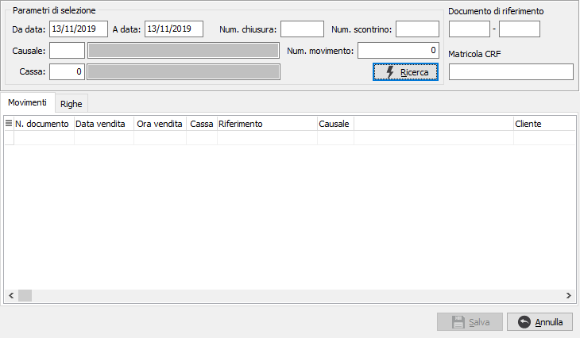
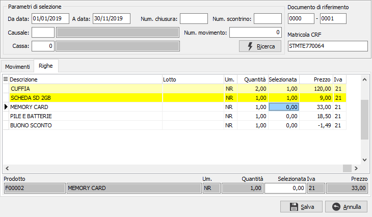
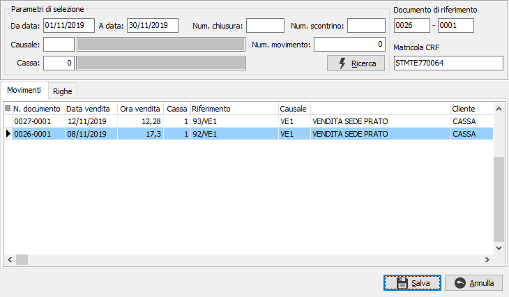

Reso/Annullamento
Quando si inserisce un nuovo movimento per reso/annullamento, appena viene indicata la relativa causale si apre la finestra di selezione dei movimenti.

La finestra di selezione è divisa in due parti una che riporta i movimenti e l’altra le righe, selezionabili solo per il movimento di reso. I parametri di selezione consentono di selezionare il singolo documento su cui operare oppure più movimenti da cui selezionare quello desiderato; dopo aver inserito i parametri premendo il tasto Ricerca compaiono i movimenti nella parte inferiore; i campi in alto a destra, Documento di riferimento, possono essere inseriti manualmente, se al salvataggio risultano non compilati saranno completati con i valori letti dal movimento selezionato, la matricola viene impostata automaticamente in base alla cassa presente sul movimento. Sempre al salvataggio viene inoltre fatto un controllo, per verificare che il riferimento inserito sia uguale a quello del movimento selezionato; se diverso viene richiesto se proseguire con l'operazione.
Non sono selezionati i documenti per cui è già stato generato un Ddt o una fattura di vendita o per cui è stato generato un documento di annullo. Per i documenti selezionati non sono riportati per il reso i tipi rigo di reso, premio, RAEE e Conai.
Documento di reso

Tramite la pressione del tasto destro del mouse è attivo il menù contestuale per la selezione/deselezione delle righe oppure posizionati sul campo Selezionata è possibile indicare la singola quantità da restituire. La pressione del pulsante Salva o del pulsante F10 conferma la selezione e riporta al movimento di vendita per effettuare il salvataggio tramite il pulsante “Salva”.
E’ possibile selezionare più volte lo stesso documento per effettuare la restituzione di quantità diverse nei limiti di importo della vendita originale.
Il movimento di reso crea un nuovo movimento generato a partire dal documento di vendita originale che riporta il numero, la data di emissione ed eventualmente la matricola RT; la generazione consente di selezionare una o più righe dal movimento originale oppure una quantità specifica dalle singole righe.
Il movimento generato non è modificabile prima del salvataggio.
In fase di salvataggio finale del movimento sono attive le funzionalità definite sulla causale del movimento di vendita al dettaglio, come ad esempio la stampa del brogliaccio che per il documento di reso riporta il documento di riferimento e la data. Se gestita la stampa dello scontrino sulla causale ed è presente il sottoconto per la gestione dei voucher (codici fissi) viene richiesto se si desidera generare un voucher per il valore dell'operazione di reso.
Documento di annullamento

Il movimento di annullamento crea un nuovo movimento generato a partire dal documento di vendita originale che riporta il numero, la data di emissione ed eventualmente la matricola RT; la generazione consente di selezionare il movimento originale senza possibilità di indicare alcuna quantità specifica.
Le finestre utilizzate sono le stesse descritte per i documenti di reso solo che in questa fase è selezionato l’intero documento senza possibilità di selezionare le righe o le quantità.
Il movimento generato non è modificabile prima del salvataggio. In questa fase non sono selezionati i tipi rigo di reso e premio.
In fase di salvataggio finale del movimento sono attive le funzionalità definite sulla causale del movimento di vendita al dettaglio, come ad esempio la stampa del brogliaccio che per il documento di reso riporta il documento di riferimento e la data. Se gestita la stampa dello scontrino sulla causale ed è presente il sottoconto per la gestione dei voucher (codici fissi) viene richiesto se si desidera generare un voucher per il valore dell'operazione di annullamento.